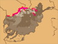

Turkmens
The Turkmens live in three countries: Afghanistan, Iran, and Turkmenistan. Very little has been written about their music, but one excellent western scholar, Slawomira Zeranska-Kominek, has done pioneering research. The Turkmens are still divided culturally and musically along old tribal lines. Most Afghan Turkmens are Ersari. Their musicians are provincial, with only a few masters on the main lute, the Turkmen dutar, and some rural folksingers and flute players. None can master the intricate and striking vocal styles and virtuoso playing of Turkmenistan. As among neighboring people, women are restricted to the tambourine and jaw harp and some domestic dance styles, mostly done at weddings.
My tapes are mostly from Andkhoi, near the center of Turkmen population, and in the large village of Qizalayaq, where the local clan and religious leader showed his magnanimity, allowing generous access to musicians and throwing a party for us.
Three soundclips give a sense of Turkmen style. Akhmad Bakhshi, recognized as a foremost musician, plays a solo dutar piece, "Nawai," and sings "Ughulbeg" with his own dutar accompaniment. A filmclip shows Akhmad Bakhshi's energetic and showy stroke style on the instrument, another of the regional two-stringed, fretted, long-necked lutes.
"Nawai" follows a common Turkmen pattern of departure and return to a basic, strongly rhythmic section. The departures get successively higher in range, returning solidly to the opening register at the end. This is markedly different from any other ethnic style of the North. Other groups do not hear or appreciate this purely Turkmen music. "Ughulbeg" displays a little of the highly emotional vocal style of Turkmen song. Missing is the small fiddle that accompanies the voice and dutar in the Turkmen homeland; I did not hear of any Turkmen fiddlers in the North. Here is the text of "Ughulbeg." The first ten lines standard, but the last five, judged weaker by people I talked to, seem to be Akhmad Bakhshi's own composition:
You are the sun, the moon, and the earth.
When I see you, my eyes brighten.
My love is the beauty of the world.
If we don't look at each other's dark eyes,
There can be nothing.
If we don't speak with sweet tongues
There can be nothing.
If we don't take each other by henna'd hands
There can be nothing.
Ughulbeg is the beauty of the world.
The hanging braids are rustling.
When you call me, winter turns to spring.
Put your foot on my eyes;
Put both feet together.
You went to milk the sheep.
The long, long flute called tuiduk is a very Turkmen instrument but, like the dutar, is a cousin to similar instrument-types across Central Asia and west Asia, often called nai or ney. It is very open at the end, so requires terrific dexterity to produce a sound, and its length means you have to stretch your fingers flat out to cover the soundholes, as you can see in the filmclip. You can just barely see that Hamra Bakhshi has hooked the end of the tuiduk into a corner of his mouth to control the airflow. The intense breathiness is characteristic of many such flutes.
|